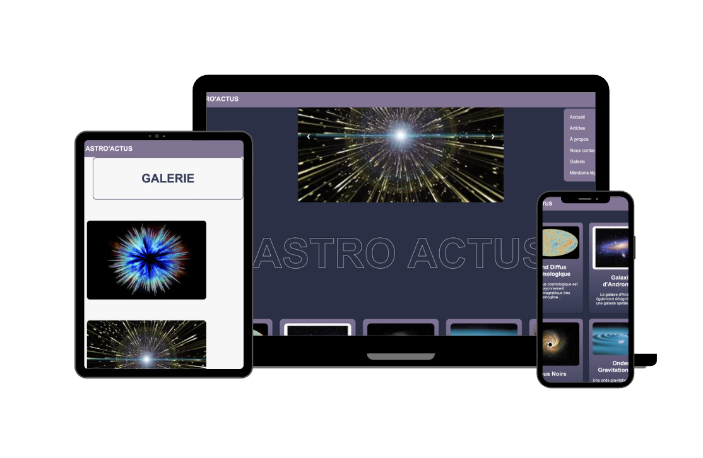
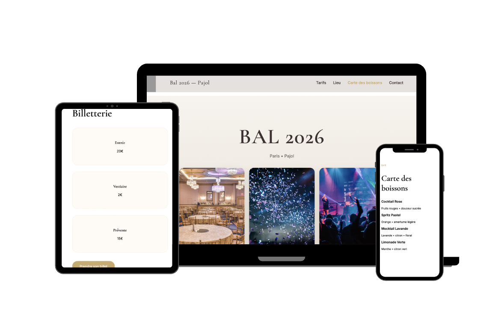
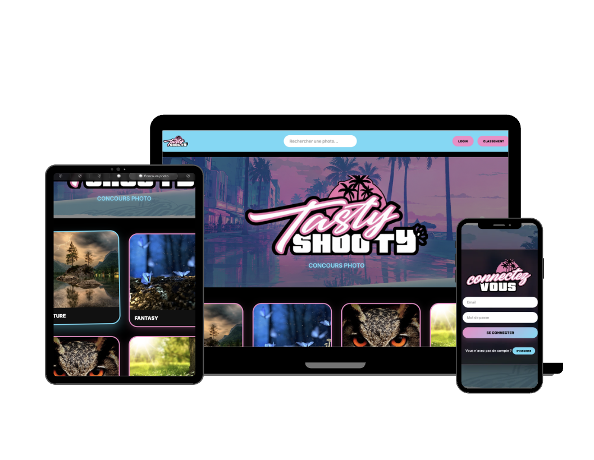
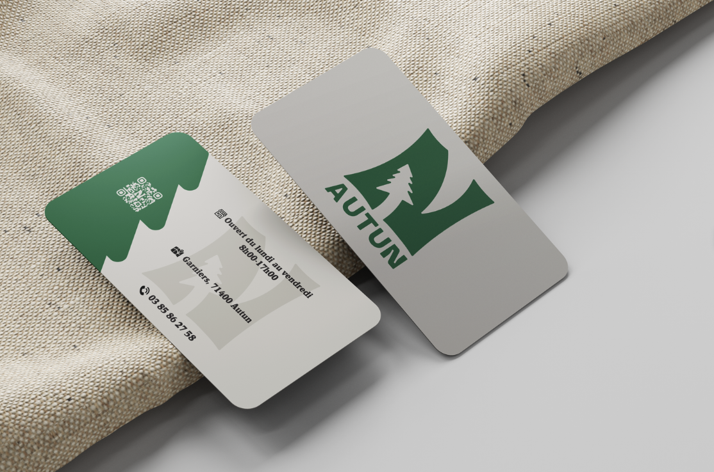
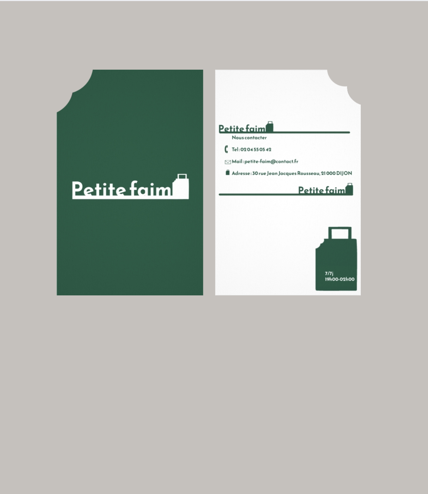

Mes Projets
Site Web

Site blog sur l'asrtrophysique
Premier projet HTML/CSS pour un projet scolaire, contient une page galerie un menu burgernet des cards articles

Site evenmentiel
Site avec html css js et animation réalisé pour aider un proche a promouvoir le bal de son école

Site Concours photo
Projet scolaire : site interactif, avec php, css et js. Premier site réalisé en base de donnée mysql.Il possèdela fonctionalité de login, logout, inscription et possibilitée de poster des photos

Site evenmentiel
Deuxieme site que j'ai produit pour mon loisir et pour m'entrainer en html/css/js animation et interactivié visant a promouvoir un festival fictif
Carte de visite

Pépinière Naudet d'Autun
Réalisation du Design et logo par Illustrator et vistaprint pour un commmanditaire réel, ainsi que

Carte visuelle petite faim
Création de l'identité visuelle d'une entreprise fictive sur Illustrator, charte graphique sur Indesing et carte de visite et autre produit dérivé